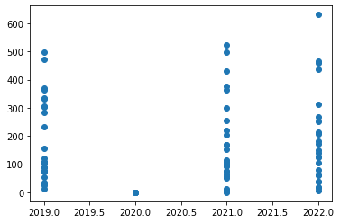
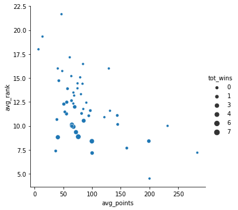
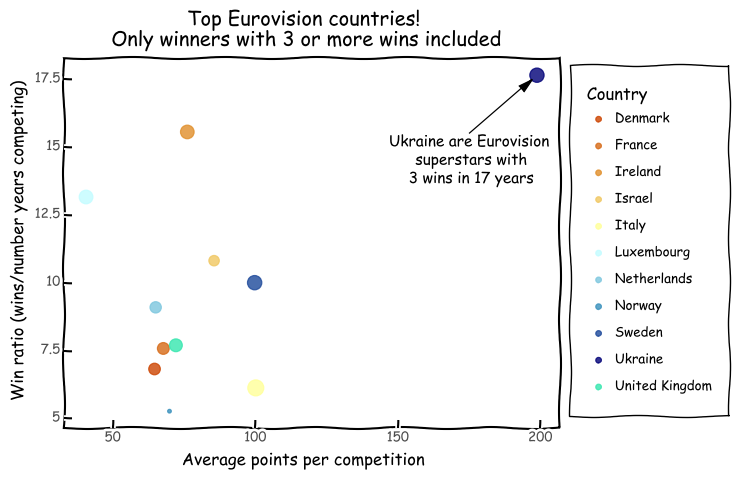

import pandas as pd
import seaborn as sns
import matplotlib.pyplot as plt
import numpy as np
from plotnine import *Eurovision data for Tidy Tuesday - trying it out in Python
Tidy Tuesday - Eurovision!
Testing out a few things with Python in an attempt to branch out from R for a change.
HTML document rendered using quarto jupyter extension.
First we will load in the libraries. Will be mostly using pandas and plot line, but will show some matplotlib and seaborn too
# load in the data
eurovision = pd.read_csv('https://raw.githubusercontent.com/rfordatascience/tidytuesday/master/data/2022/2022-05-17/eurovision.csv')
eurovision.head()| event | host_city | year | host_country | event_url | section | artist | song | artist_url | image_url | artist_country | country_emoji | running_order | total_points | rank | rank_ordinal | qualified | winner | |
|---|---|---|---|---|---|---|---|---|---|---|---|---|---|---|---|---|---|---|
| 0 | Turin 2022 | Turin | 2022 | Italy | https://eurovision.tv/event/turin-2022 | first-semi-final | Kalush Orchestra | Stefania | https://eurovision.tv/participant/kalush-orche... | https://static.eurovision.tv/hb-cgi/images/963... | Ukraine | :flag_ua: | 6.0 | 337.0 | 1.0 | 1st | True | False |
| 1 | Turin 2022 | Turin | 2022 | Italy | https://eurovision.tv/event/turin-2022 | first-semi-final | S10 | De Diepte | https://eurovision.tv/participant/s10-22 | https://static.eurovision.tv/hb-cgi/images/963... | Netherlands | :flag_nl: | 8.0 | 221.0 | 2.0 | 2nd | True | False |
| 2 | Turin 2022 | Turin | 2022 | Italy | https://eurovision.tv/event/turin-2022 | first-semi-final | Amanda Georgiadi Tenfjord | Die Together | https://eurovision.tv/participant/amanda-georg... | https://static.eurovision.tv/hb-cgi/images/963... | Greece | :flag_gr: | 15.0 | 211.0 | 3.0 | 3rd | True | False |
| 3 | Turin 2022 | Turin | 2022 | Italy | https://eurovision.tv/event/turin-2022 | first-semi-final | MARO | Saudade, Saudade | https://eurovision.tv/participant/maro-22 | https://static.eurovision.tv/hb-cgi/images/963... | Portugal | :flag_pt: | 10.0 | 208.0 | 4.0 | 4th | True | False |
| 4 | Turin 2022 | Turin | 2022 | Italy | https://eurovision.tv/event/turin-2022 | first-semi-final | Intelligent Music Project | Intention | https://eurovision.tv/participant/intelligent-... | https://static.eurovision.tv/hb-cgi/images/963... | Bulgaria | :flag_bg: | 7.0 | 29.0 | 16.0 | 16th | False | False |
# quick check of how the data is organised. We only want the finals
eurovision['section'].value_counts()final 917
grand-final 462
second-semi-final 266
first-semi-final 261
semi-final 99
Name: section, dtype: int64cleaning and aggregating
Now we do some cleaning and aggreating. Looking to find out some averages for points and rank, as well as total wins. Finally, we make a win ratio.
# make col with winner as number
eurovision['winner_int'] = eurovision.winner.astype(int)
# aggregate points, rank, and winner by country
euro_agg = eurovision.loc[(eurovision["section"] == 'final') | (eurovision["section"] == 'grand-final'), :].groupby('artist_country').agg(
avg_points=pd.NamedAgg(column="total_points", aggfunc="mean"),
avg_rank=pd.NamedAgg(column="rank", aggfunc="mean"),
tot_wins = pd.NamedAgg(column='winner_int', aggfunc='sum'),
tot_years = pd.NamedAgg(column='year', aggfunc='count')).sort_values('tot_wins', ascending=False).reset_index()
euro_agg['win_ratio'] = (euro_agg['tot_wins']/euro_agg['tot_years'])*100
euro_agg.head(11)| artist_country | avg_points | avg_rank | tot_wins | tot_years | win_ratio | |
|---|---|---|---|---|---|---|
| 0 | Ireland | 76.177778 | 8.866667 | 7 | 45 | 15.555556 |
| 1 | Sweden | 99.796610 | 8.400000 | 6 | 60 | 10.000000 |
| 2 | France | 67.761905 | 9.907692 | 5 | 66 | 7.575758 |
| 3 | Luxembourg | 40.657143 | 8.815789 | 5 | 38 | 13.157895 |
| 4 | Netherlands | 65.080000 | 10.129630 | 5 | 55 | 9.090909 |
| 5 | United Kingdom | 72.174603 | 9.343750 | 5 | 65 | 7.692308 |
| 6 | Israel | 85.567568 | 10.540541 | 4 | 37 | 10.810811 |
| 7 | Ukraine | 198.823529 | 8.411765 | 3 | 17 | 17.647059 |
| 8 | Denmark | 64.681818 | 10.000000 | 3 | 44 | 6.818182 |
| 9 | Italy | 100.200000 | 7.166667 | 3 | 49 | 6.122449 |
| 10 | Norway | 69.924528 | 11.982456 | 3 | 57 | 5.263158 |
This is a function I made a while back to pull extract hex codes from the coolors website.
# function to make hex codes from coolors url
def coolors(URL):
# function takes coolors url, extracts hex codes and adds #
if URL.find("palette") != -1:
# extract just the hex
cstr = URL.replace("coolors.co", "")
cstr = cstr.replace("https:///", "")
cstr = cstr.replace("palette/", "")
cstr = cstr.replace("-", " ")
# split into individual strings and add #
clist = cstr.split(" ")
cols = []
for hex in range(len(clist)):
cols.append((str("#" + clist[hex])))
return cols
else:
# extract just the hex
cstr = URL.replace("coolors.co", "")
cstr = cstr.replace("https:///", "")
cstr = cstr.replace("-", " ")
# split into individual strings and add #
clist = cstr.split(" ")
cols = []
for hex in range(len(clist)):
cols.append((str("#" + clist[hex])))
return cols# little test to see if a yearly aggregation would be interesting
euro_years = (eurovision.loc[(eurovision["section"] == 'final') | (eurovision["section"] == 'grand-final'), :]
).groupby(by = ['year', 'artist_country']).agg(
tot_points=pd.NamedAgg(column="total_points", aggfunc="sum"),
rank=pd.NamedAgg(column="rank", aggfunc="mean")
).sort_values('tot_points', ascending=False).reset_index()
euro_years.head()| year | artist_country | tot_points | rank | |
|---|---|---|---|---|
| 0 | 2017 | Portugal | 758.0 | 1.0 |
| 1 | 2022 | Ukraine | 631.0 | 1.0 |
| 2 | 2017 | Bulgaria | 615.0 | 2.0 |
| 3 | 2016 | Ukraine | 534.0 | 1.0 |
| 4 | 2018 | Israel | 529.0 | 1.0 |
plotting
First up is matplotlib, very simple test with year and total points
x, y = euro_years.loc[euro_years['year'] > 2018, 'year'], euro_years.loc[euro_years['year'] > 2018, 'tot_points']
x = np.array(x).astype(int)
y = np.array(y)
plt.scatter(x, y)
#plt.legend()
plt.show()
Now we try using seaborn with average points and rank.
sns.relplot(
data = euro_agg,
x = 'avg_points', y = 'avg_rank',
size = 'tot_wins'
)<seaborn.axisgrid.FacetGrid at 0x7fdfc95096a0>
Finally we move to plotnine, which is the Python version of ggplot2. It doesn’t have all the amazing extensions of ggplot2, but seems to work okay. First thing is to get the palette ready. Then we construct the plot. Using xkcd for something a bit fun.
# make palette
pal_url = "https://coolors.co/palette/cc4400-d66915-e08e29-f0c761-ffff99-c2fcff-7cc6de-3890bc-1c489a-000077-35e6ae"
pal = coolors(pal_url)
print(pal)['#cc4400', '#d66915', '#e08e29', '#f0c761', '#ffff99', '#c2fcff', '#7cc6de', '#3890bc', '#1c489a', '#000077', '#35e6ae']euro_agg[euro_agg['tot_wins'] >= 3]| artist_country | avg_points | avg_rank | tot_wins | tot_years | win_ratio | |
|---|---|---|---|---|---|---|
| 0 | Ireland | 76.177778 | 8.866667 | 7 | 45 | 15.555556 |
| 1 | Sweden | 99.796610 | 8.400000 | 6 | 60 | 10.000000 |
| 2 | France | 67.761905 | 9.907692 | 5 | 66 | 7.575758 |
| 3 | Luxembourg | 40.657143 | 8.815789 | 5 | 38 | 13.157895 |
| 4 | Netherlands | 65.080000 | 10.129630 | 5 | 55 | 9.090909 |
| 5 | United Kingdom | 72.174603 | 9.343750 | 5 | 65 | 7.692308 |
| 6 | Israel | 85.567568 | 10.540541 | 4 | 37 | 10.810811 |
| 7 | Ukraine | 198.823529 | 8.411765 | 3 | 17 | 17.647059 |
| 8 | Denmark | 64.681818 | 10.000000 | 3 | 44 | 6.818182 |
| 9 | Italy | 100.200000 | 7.166667 | 3 | 49 | 6.122449 |
| 10 | Norway | 69.924528 | 11.982456 | 3 | 57 | 5.263158 |
euro_plot = ggplot(euro_agg[euro_agg['tot_wins'] >= 3], aes(x = 'avg_points', y = 'win_ratio', color = 'artist_country', size = "avg_rank")) +\
geom_point(alpha = 0.8) +\
scale_color_manual(values = pal) +\
scale_size(trans = 'reverse', guide = False) +\
labs(title = "Top Eurovision countries!\n Only winners with 3 or more wins included",
x = "Average points per competition",
y = "Win ratio (wins/number years competing)",
color = "Country") +\
annotate("text", x = 175, y = 14.5, label = "Ukraine are Eurovision\n superstars with\n 3 wins in 17 years") +\
annotate('segment', x = 175, y = 15.5, xend = 197, yend = 17.5, arrow = arrow(angle=15, length=0.15, type='closed')) +\
theme_xkcd()
euro_plot.save("eurovision.png", width=8, height=6, dpi=320)
euro_plot/Users/MOLES/opt/anaconda3/lib/python3.8/site-packages/plotnine/ggplot.py:727: PlotnineWarning: Saving 8 x 6 in image.
/Users/MOLES/opt/anaconda3/lib/python3.8/site-packages/plotnine/ggplot.py:730: PlotnineWarning: Filename: eurovision.png
<ggplot: (8787416446163)># quick look at the best win ratios
euro_agg.sort_values('win_ratio', ascending=False).head(10)| artist_country | avg_points | avg_rank | tot_wins | tot_years | win_ratio | |
|---|---|---|---|---|---|---|
| 7 | Ukraine | 198.823529 | 8.411765 | 3 | 17 | 17.647059 |
| 0 | Ireland | 76.177778 | 8.866667 | 7 | 45 | 15.555556 |
| 3 | Luxembourg | 40.657143 | 8.815789 | 5 | 38 | 13.157895 |
| 6 | Israel | 85.567568 | 10.540541 | 4 | 37 | 10.810811 |
| 19 | Latvia | 97.100000 | 11.600000 | 1 | 10 | 10.000000 |
| 1 | Sweden | 99.796610 | 8.400000 | 6 | 60 | 10.000000 |
| 4 | Netherlands | 65.080000 | 10.129630 | 5 | 55 | 9.090909 |
| 18 | Serbia | 143.909091 | 11.090909 | 1 | 11 | 9.090909 |
| 5 | United Kingdom | 72.174603 | 9.343750 | 5 | 65 | 7.692308 |
| 26 | Azerbaijan | 144.692308 | 10.153846 | 1 | 13 | 7.692308 |